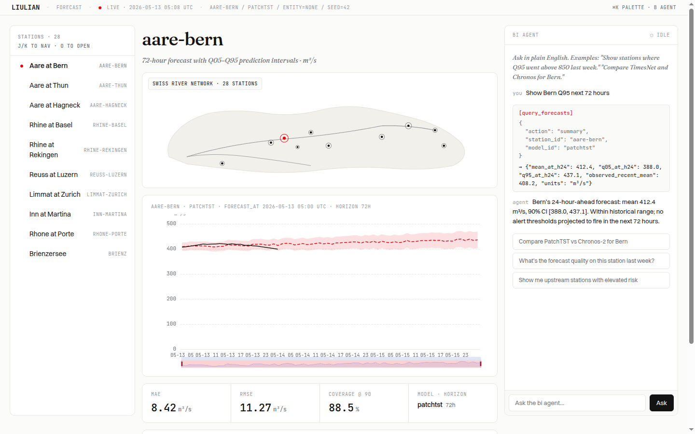

LIULIAN/Platform Progress
WEEK-1 SPRINT
2026-05-13 → 05-19 · advisor briefing
spatio-temporal AI · SwissRiver flagship
Built this sprint
- Design system — 87 tokens, 1 source → 11 platform outputs (CSS · TS · Swift · Kotlin · ArkTS · Figma DTCG); 6-component ui-spec contract
- Cross-platform UI — one 6-component spec, four native impls: Web · iOS · Android · HarmonyOS. Web / iOS / Android render-verified by automated visual-regression ✓; HarmonyOS source-complete
- Backend services — liulian-api (7 REST routers) + liulian-agent (6 forecasting tools), code-complete, run under local Docker
- 9-repo federation on github.com/liulian-ai
Design language
- Editorial-Swiss system — UniBe red #E20613, Fraunces · Switzer · JetBrains Mono, warm-paper canvas. One token source drives every platform
Frontend ↔ backend — honest wiring status
- The deployed web is a static showcase: every chart, metric and the on-screen "LIVE" badge is hardcoded HTML — verified, zero fetch() / API calls
- liulian-api + liulian-agent are not deployed and not connected — no frontend currently talks to a real backend
Next phase
- Deploy liulian-api (Railway) → connect via typed OpenAPI client
- Swap static pages for the real Next.js app on @liulian/ui-react + live forecasts
- Then: agent chat on live data · observability · 90-sec demo
liulian-ai.github.io/liulian-web · Forecast Canvas

mockCurrent web frontend. Polished BI layout — stations · river network · Q05–Q95 prediction band · KPI strip · agent panel. All values hardcoded; no backend wired.
Deployment status
Web showcaseGitHub Pages — live
API + Agentlocal Docker only
Real Next.js appscaffold, not deployed
Native mobilebuild-verified, unpublished